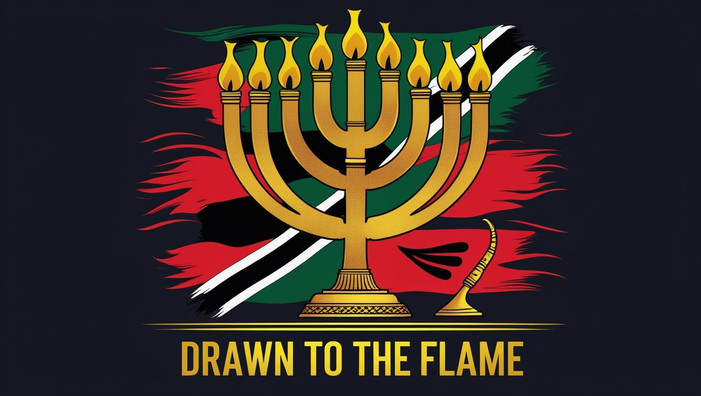
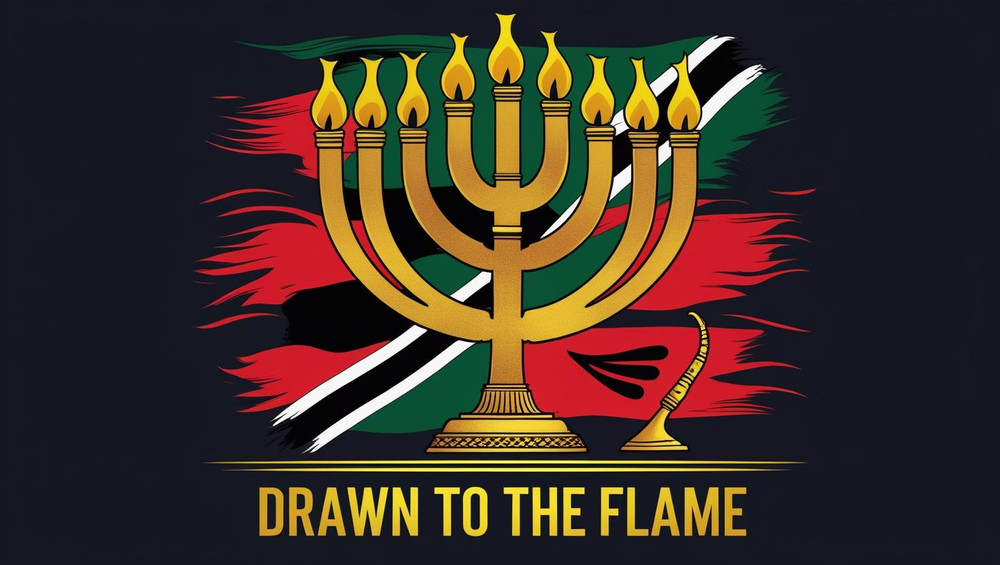

📜 Scroll 3: The Nations Drawn to the Flame
Nations magnetized to the true Light.
Isaiah’s Prophecy
“Arise, shine; for your light has come, and the glory of the Lord is risen upon you... And nations shall come to your light, and kings to the brightness of your rising.” (Isaiah 60:1–3).
The Flame of Testimony
As believers walk in the Spirit, their lives become flames of testimony. Like torches, they ignite hope in dark regions. The Gospel, when lived out, is irresistible.
The Global Mandate
This scroll reveals the prophetic urgency of the Great Commission. The fire is not meant to be hidden. It is the light of salvation, burning brightly for every tribe, tongue, and nation.
A Kingdom of Priests
God’s purpose is not just to save individuals but to form a kingdom of priests — a radiant Bride. Scroll 3 calls the Body of Christ to rise and shine with fearless obedience.
Israel’s Rebirth (1948): A prophetic anchor marking the restoration of God’s chosen nation (Isaiah 66:8).
Haitian Flag & Prophecy: A covenant sign, with colors and symbols foretelling redemption (Zechariah 4:6).
Mombasa Revival & Outreach: Stories of awakening and spiritual renewal in Kenya, drawing souls to the flame.

 
